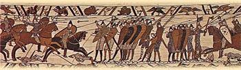
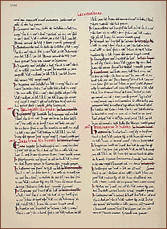

William, the Conqueror, not only seized a country but also held on to it for 21 years. William, Duke of Normandy, was a French-speaking nobleman who hoped to follow his distant cousin, King Edward the Confessor, as king of England. On his deathbed in 1066, Edward reportedly named his brother-in-law Harold, Earl of Wessex, as his heir. But William claimed the throne and launched an invasion fleet from Normandy.
Battle of Hastings
While Harold fought invading Norwegians in northern England, William’s fleet landed in the south. Harold drove back the Norwegians and turned his weary army south. On Oct. 14, 1066, William’s force demolished Harold’s army at the Battle of Hastings. Harold was killed by an arrow through the eye in the battle.

Battle of Hastings
William the Conqueror Center, Bayeux, France / Barnaby's Picture Library, London
His reign
Although William ruled with an iron hand, he was a capable ruler. His greatest monument is Domesday Book, a massive, detailed survey of the land and principal landholders of his realm. William ruled England until his death in 1087.
 |
| The Domesday Book |
| Newberry Library, Chicago |